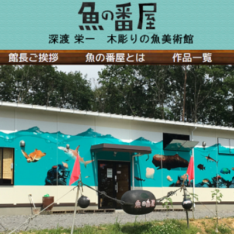
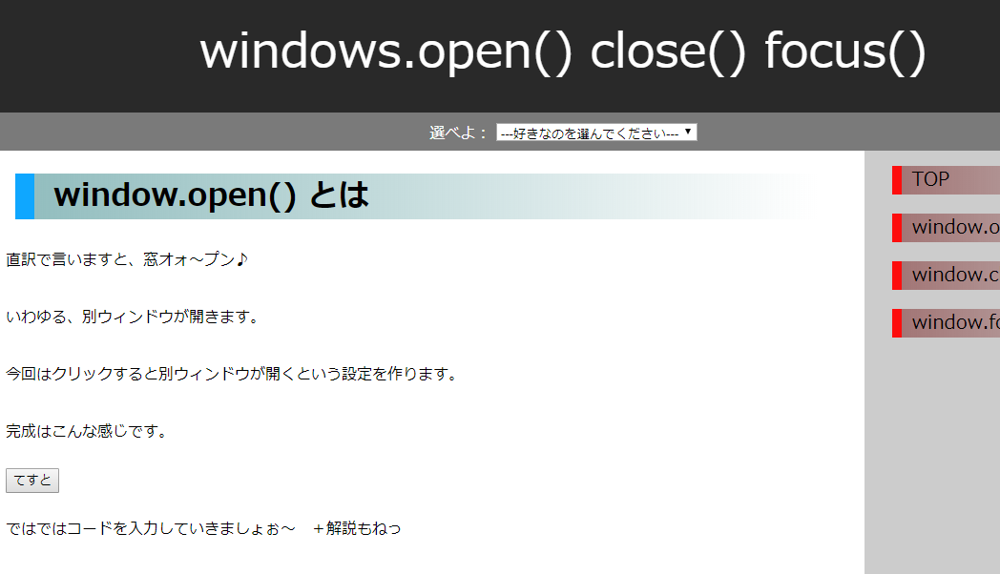

Main works

Word検定2級取得  魚の番屋サイト作成 Javaプログラミング検定3級取得

Webクリエイター試験エキスパート取得 HTMLプロフェッショナル試験Lv1取得
Home works
ブログ風ページ  Javascript別ウィンドウ 
Javascriptコンソール説明 
jQueryサンプル集
人生の実績
平成生まれ 
幼稚園入学 幼稚園お絵描き最優秀賞 幼稚園卒業
小学校入学 初熱 小学校図書委員長 初 インフルエンザ
小学校卒業 中学校入学 英検4級合格 テニス部1回戦ALL敗退
中学校放送委員長 英語スピーチ4位 中学校卒業 高校入学
高校クラス委員長 初 帰宅部 ワープロ検定2級取得 高校卒業
初 医学専門学校入学 初 医学専門学校退学 2年継続ニート 自動車運転免許MT取得
初 アルバイト 初 情報系専門学校入学 専門学校クラス委員長 祝 リーダーになった回数30回超